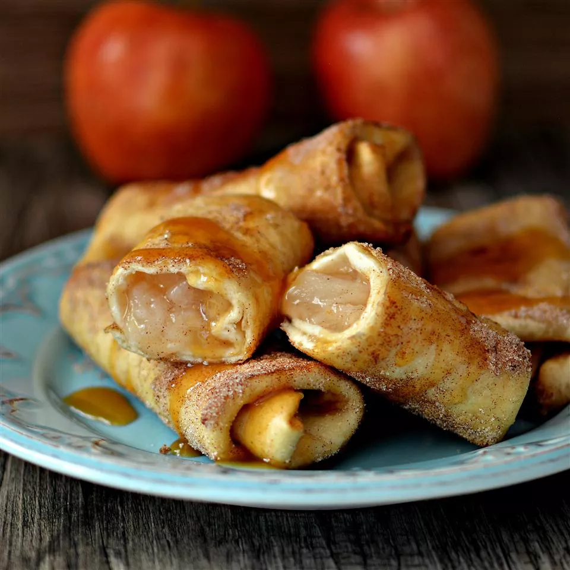

Best Mexican-inspired breakfast or dessert! If you like, drizzle with honey.
Heat apple pie filling in a small pot over medium-low heat until warmed through, about 5 minutes.
Place cinnamon sugar in a shallow dish.
Spoon 1 1/2 tablespoons of filling onto each tortilla. Fold in opposing edges and roll up as you would a burrito.
Heat oil in a large, deep saucepan over medium heat.
Place a batch of rolled tortillas seam-side down in the hot oil and fry until browned and crispy, 1 to 2 minutes. Turn and continue frying until all sides are browned, 1 to 2 minutes more. Roll in cinnamon sugar to coat. Repeat with remaining batches.